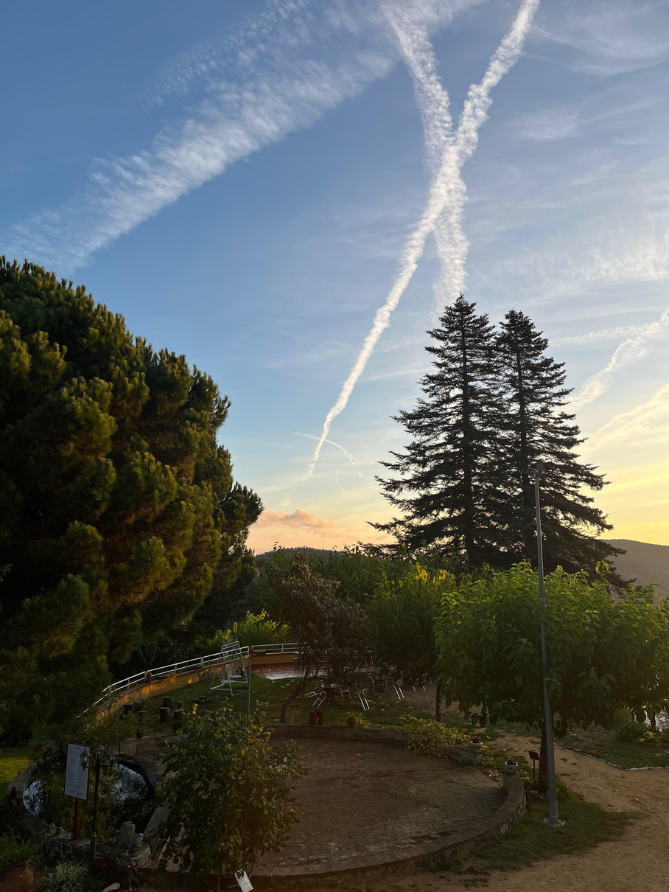
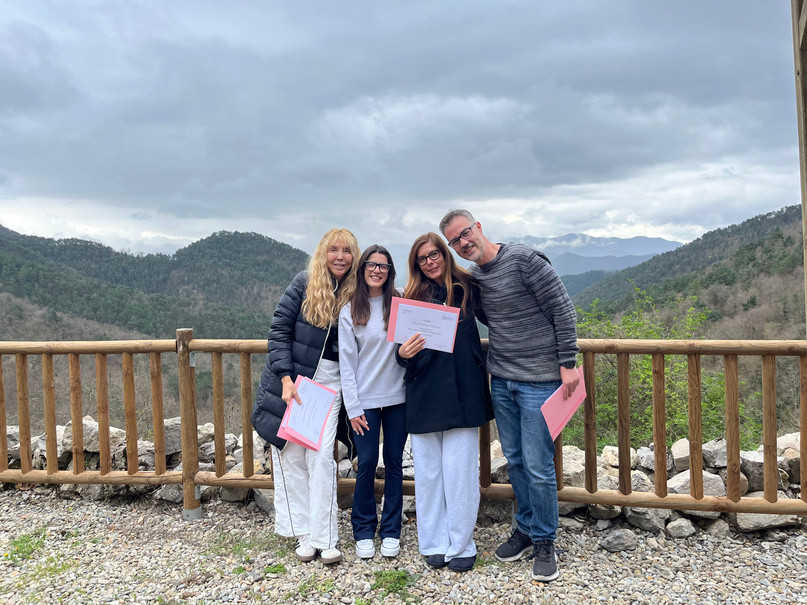
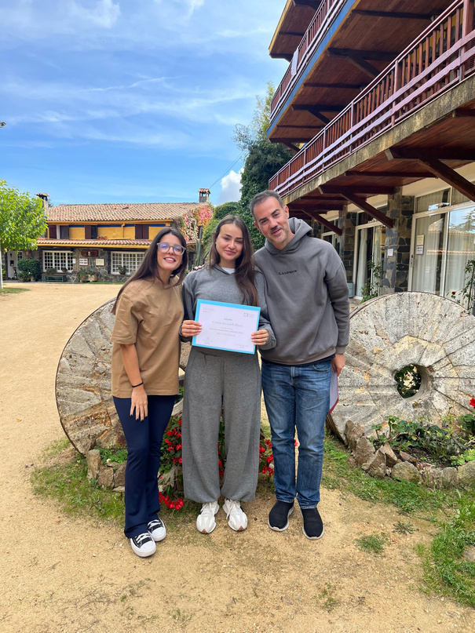
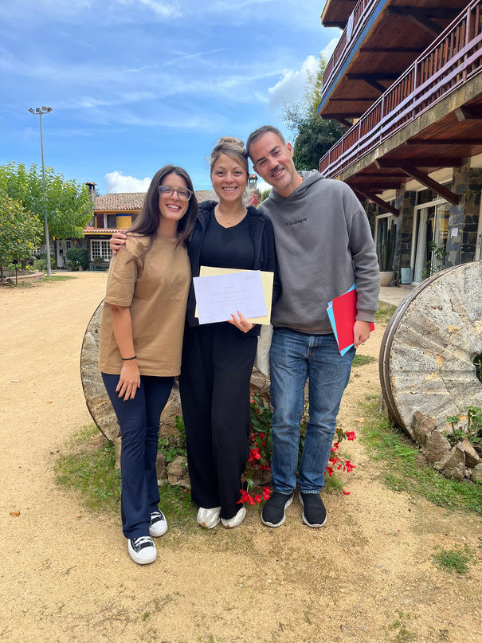
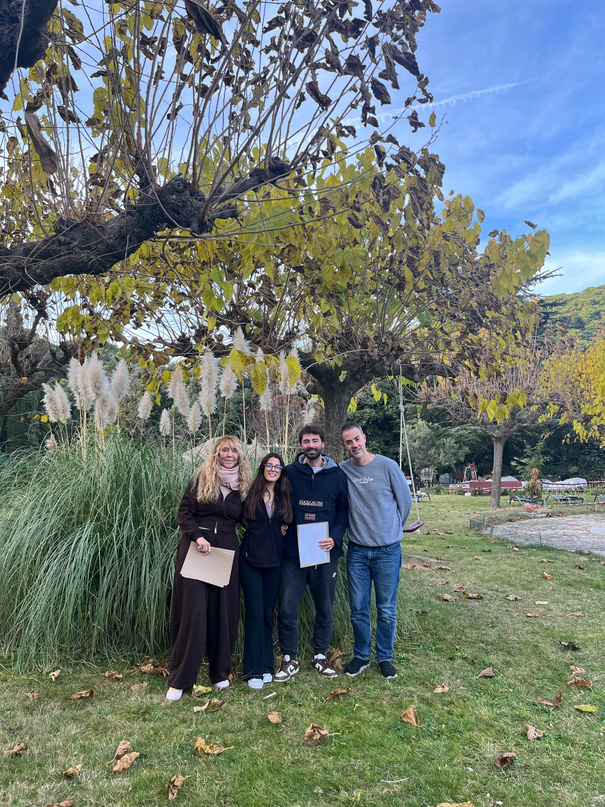
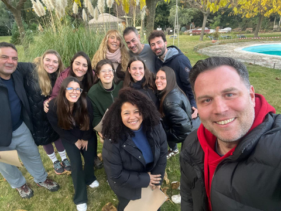

Retiro vivencial de Inteligencia Emocional. Del viernes por la tarde al domingo por la tarde: suelta cargas, gestiona tus miedos y descubre qué te impide avanzar.

Un fin de semana diseñado para desconectar del ruido externo y conectar contigo. A través de dinámicas vivenciales aprenderás a gestionar tus miedos, soltar bloqueos y fortalecer tu persona.
Muchas veces cargamos con emociones, creencias y patrones que ya no nos sirven. Aquí aprenderás a identificarlos y transformarlos en energía para tu crecimiento.
¿Listo/a para regalarte este momento?





Porque priorizarte no es un gasto: es un regalo para el resto de tu vida.
Déjanos tus datos y accede al vídeo al instante. Te avisaremos de la próxima edición.